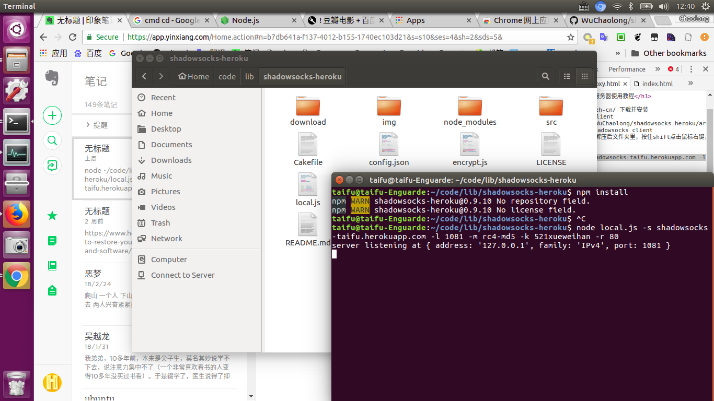
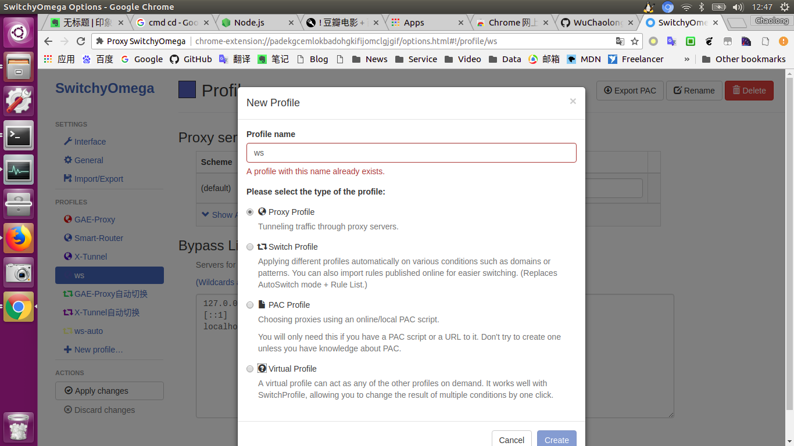
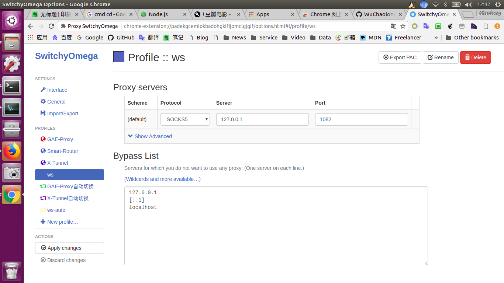

https://nodejs.org/zh-cn/ 下载并安装
https://github.com/WuChaolong/shadowsocks-heroku/archive/master.zip 下载并解压
shadowsocks client 解压后文件夹里，按住shift点击鼠标右键，打 开命令行 执行下面的
npm install
node local.js -s shadowsocks-taifu.herokuapp.com -l 1082 -m rc4-md5 -k 521xueweihan -r 80

在SwitchyOmega Options中New profile
socks5 127.0.0.1 8082
